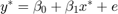
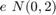
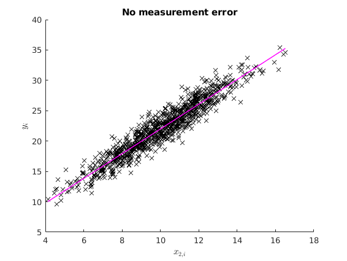
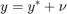
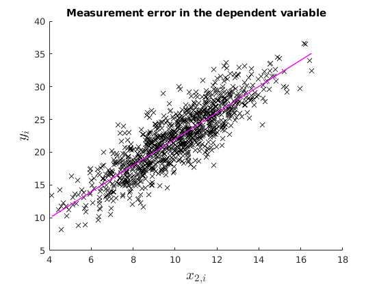
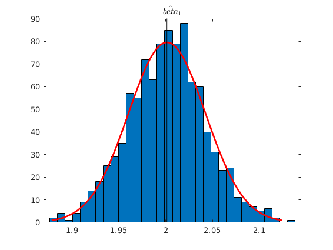
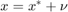
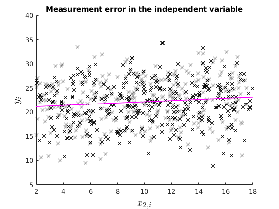
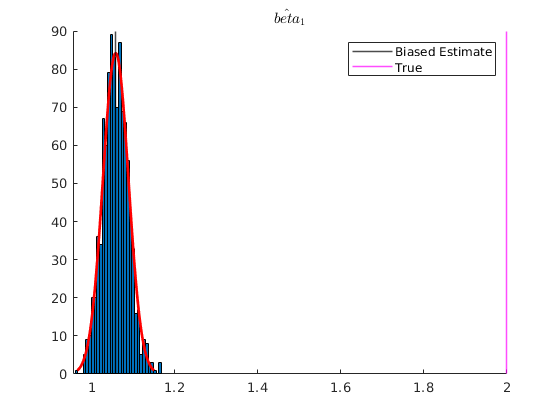

Econometrics I
TA Christian Alemán
Session 8: Monday 14, March 2022
1: Measurement Error
- Measurement error in the dependent variable
- Measurement error in the independent variable
- IV Estimation
The case with no measurement error
Consider the following DGP:


% Housekeeping clear clc close all % Set seed for reproductibility rng(123) N=1000; betas = [2 2]'; err = sqrt(2).*randn(N,1); x2_star = 10+2.*randn(N,1); X_star = [ones(N,1) x2_star]; y_star = X_star*betas +err; ols_func = @(X,y) (X'*X)\(X'*y); % The OLS estimation of the true model is names = str2mat("beta_{0}", "beta_{1}"); [b] = mc_ols(y_star, X_star, names, 0, 1); y_pred = X_star*b; figure(1) hold on plot(x2_star,y_star,'kx','MarkerFaceColor','k') plot(x2_star, y_pred,'m-','linewidth',1.1) ylabel('$y_{i}$', 'interpreter','latex') xlabel('$x_{2,i}$','interpreter','latex') title('No measurement error')
1.1: Measurement error in the dependent variable

In this case OLS is still unbiased and consistent.
v = 2.*randn(N,1); y = y_star +v; % OLS estimation [b] = mc_ols(y, X_star, names, 0, 1); y_pred = X_star*b; figure(2) hold on plot(x2_star,y,'kx','MarkerFaceColor','k') plot(x2_star, y_pred,'m-','linewidth',1.1) ylabel('$y_{i}$', 'interpreter','latex','fontsize',16) xlabel('$x_{2,i}$','interpreter','latex','fontsize',16) title('Measurement error in the dependent variable') % See that with Montecarlo experiment: no_reps = 1000; K = size(X_star,2); MC_betas = nan(no_reps,K); for i = 1:no_reps e_rep = sqrt(4).*randn(N,1); %The error term of the regression y_star = X_star*betas +e_rep; v = 2.*randn(N,1); y_rep = y_star +v; MC_betas(i,:) = (ols_func(X_star,y_rep))'; end figure(3) histfit(MC_betas(:,2)) xline(mean(MC_betas(:,2)),'k-','linewidth',1.2) title('$\hat{beta}_{1}$','Interpreter','latex')
*********************************************************
OLS estimation results
Observations 1000
R-squared 0.745898
Sigma-squared 6.189020
Results (Ordinary var-cov estimator)
estimate st.err. t-stat. p-value
beta_{0} 1.897 0.381 4.984 0.000
beta_{1} 2.010 0.037 54.125 0.000
*********************************************************
  1.2: Measurement error in the explanatory variable: Attenuation bias
% 
Under attenuation bias then OLS estimator will be biased towards 0.
% Now suppose our dependent variable is measured with error v = 8.*randn(N,1); x2 = x2_star +v; X = [ones(N,1) x2]; % OLS estimation [b] = mc_ols(y_star, X, names, 0, 1); y_pred = X*b; figure(4) hold on plot(x2,y_star,'kx','MarkerFaceColor','k') plot(x2, y_pred,'m-','linewidth',1.2) ylabel('$y_{i}$', 'interpreter','latex','fontsize',16) xlabel('$x_{2,i}$','interpreter','latex','fontsize',16) xlim([2,18]) ylim([5,40]) title('Measurement error in the independent variable') % See that with Montecarlo experiment: K = size(X,2); MC_betas = nan(no_reps,K); for i = 1:no_reps e_rep = sqrt(4).*randn(N,1); %The error term of the regression y_star = X_star*betas +e_rep; v = 2.*randn(N,1); x2 = x2_star +v; %Classical additive measurement error X = [ones(N,1) x2]; MC_betas(i,:) = (ols_func(X,y_star))'; end figure(5) hold on histfit(MC_betas(:,2)) p1 = xline(mean(MC_betas(:,2)),'k-','linewidth',1.2); p2 = xline(2,'m-','linewidth',1.2); title('$\hat{beta}_{1}$','Interpreter','latex') legend([p1,p2],{'Biased Estimate','True'})
*********************************************************
OLS estimation results
Observations 1000
R-squared 0.049470
Sigma-squared 21.048797
Results (Ordinary var-cov estimator)
estimate st.err. t-stat. p-value
beta_{0} 20.894 0.229 91.191 0.000
beta_{1} 0.125 0.017 7.207 0.000
*********************************************************
  Dealing with measurement error
- IV
- 2SLS
Example Instrumental Variable Estimation.
n = 1000; z1 = 3.*randn(n,1); z2 = 2.*randn(n,1); x = 3-2*z2+4*z1+randn(n,1); y = 2+2*x +12*z2+randn(n,1); % Case with no ommited variable X = [ones(n,1) x z2]; names = str2mat("beta_{0}", "beta_{1}", "beta_{2}"); b = mc_ols(y, X, names, 0, 1);
*********************************************************
OLS estimation results
Observations 1000
R-squared 0.998771
Sigma-squared 0.998597
Results (Ordinary var-cov estimator)
estimate st.err. t-stat. p-value
beta_{0} 2.043 0.033 62.688 0.000
beta_{1} 2.001 0.003 770.861 0.000
beta_{2} 12.004 0.017 688.998 0.000
*********************************************************
Suppose we only observe x and z1:
Case with ommited variable:
X = [ones(n,1) x]; names = str2mat("beta_{0}", "beta_{1}"); [b] = mc_ols(y, X, names, 0, 1);
*********************************************************
OLS estimation results
Observations 1000
R-squared 0.413590
Sigma-squared 475.999738
Results (Ordinary var-cov estimator)
estimate st.err. t-stat. p-value
beta_{0} 3.591 0.710 5.059 0.000
beta_{1} 1.423 0.054 26.531 0.000
*********************************************************
Solution
We can use z1 as an intrument:
- z1 is correlated with x
- z1 is not correlation to z2, thus not correlated with the residuals
Case 1: A very good instrument
disp('Check Correlation between x and z1') disp(corr(x,z1)) Z = [ones(n,1) z1]; [b] = mc_olsIV(y,X,Z, names, 0, 1); %b_IV= inv(Z'*X)*Z'*y
Check Correlation between x and z1
0.9501
*********************************************************
OLS estimation results
Observations 1000
R-squared 0.354973
Sigma-squared 523.580490
Results (Ordinary var-cov estimator)
estimate st.err. t-stat. p-value
beta_{0} 1.920 0.724 2.652 0.008
beta_{1} 1.959 0.119 16.477 0.000
*********************************************************
Two Stage Least Squares
b_hat_x = inv(Z'*Z)*Z'*X;
X_hat = Z*b_hat_x;
[b] = mc_ols(y,X_hat, names, 0, 1);
%b_2SLS = inv(X_hat'*X_hat)*X_hat'*y
*********************************************************
OLS estimation results
Observations 1000
R-squared 0.707395
Sigma-squared 237.512636
Results (Ordinary var-cov estimator)
estimate st.err. t-stat. p-value
beta_{0} 1.920 0.503 3.818 0.000
beta_{1} 1.959 0.040 49.120 0.000
*********************************************************
Case 2: A good instrument
z1= 0.9.*randn(n,1); x = 3- 2*z2+4*z1+randn(n,1); y = 2+ 2*x +12*z2+randn(n,1); disp('Check Correlation between x and z1') disp(corr(x,z1)) X = [ones(n,1) x]; Z = [ones(n,1) z1]; [b] = mc_olsIV(y,X,Z, names, 0, 1); %b_IV= inv(Z'*X)*Z'*y
Check Correlation between x and z1
0.6684
*********************************************************
OLS estimation results
Observations 1000
R-squared -0.859892
Sigma-squared 553.530829
Results (Ordinary var-cov estimator)
estimate st.err. t-stat. p-value
beta_{0} 1.339 0.748 1.791 0.074
beta_{1} 2.130 0.412 5.170 0.000
*********************************************************
Two Stage Least Squares
b_hat_x = inv(Z'*Z)*Z'*X;
X_hat = Z*b_hat_x;
[b] = mc_ols(y,X_hat, names, 0, 1);
%b_2SLS = inv(X_hat'*X_hat)*X_hat'*y
dert_stop = 1;
*********************************************************
OLS estimation results
Observations 1000
R-squared 0.194707
Sigma-squared 239.666920
Results (Ordinary var-cov estimator)
estimate st.err. t-stat. p-value
beta_{0} 1.339 0.645 2.076 0.038
beta_{1} 2.130 0.137 15.534 0.000
*********************************************************
Case 3: A weak instrument
z1= 0.07.*randn(n,1); x = 3- 2*z2+4*z1+randn(n,1); y = 2+ 2*x +12*z2+randn(n,1); disp('Check Correlation between x and z1') disp(corr(x,z1)) X = [ones(n,1) x]; Z = [ones(n,1) z1]; [b] = mc_olsIV(y,X,Z, names, 0, 1); %b_IV= inv(Z'*X)*Z'*y
Check Correlation between x and z1
0.0707
*********************************************************
OLS estimation results
Observations 1000
R-squared -0.326477
Sigma-squared 319.804815
Results (Ordinary var-cov estimator)
estimate st.err. t-stat. p-value
beta_{0} 5.832 0.417 14.000 0.000
beta_{1} 0.632 4.026 0.157 0.875
*********************************************************
Two Stage Least Squares
b_hat_x = inv(Z'*Z)*Z'*X;
X_hat = Z*b_hat_x;
[b] = mc_ols(y,X_hat, names, 0, 1);
%b_2SLS = inv(X_hat'*X_hat)*X_hat'*y
dert_stop = 1;
Functions
%------------------------------------------------------------- function [beta,sigma,r]= ols(y,x) % Simple OLS regression t = size(x,1); beta = inv (x'*x) * x' * y; sigma = (y-x*beta)'*(y-x*beta)/(t-rank(x)); r = y - x*beta; end %------------------------------------------------------------- function prettyprint(mat, rlabels, clabels) %{ This function prints matrices with row and column labels Copyright (C) 2010 Michael Creel <michael.creel@uab.es> This program is free software; you can redistribute it and/or modify it under the terms of the GNU General Public License as published by the Free Software Foundation %} % left pad the column labels a = size(rlabels,2); for i = 1:a fprintf(' '); end fprintf(' '); % print the column labels try clabels = [' ';clabels]; % pad to 8 characters wide catch dert_stop = 1; end clabels = strjust(clabels,'right'); k = size(mat,2); for i = 1:k fprintf('%s ',clabels(i+1,:)); end % now print the row labels and rows fprintf('\n'); k = size(mat,1); for i = 1:k if ischar(rlabels(i,:)) fprintf(rlabels(i,:)); else fprintf('%i', rlabels(i,:)); end fprintf(' %10.3f', mat(i,:)); fprintf('\n'); end end function result = eemult_mv(m,v) if not(ismatrix(m)) error("eemult_mv: first arg must be a matrix"); end if not(isvector(v)) error("eemult_mv: second arg must be a vector"); end [rm, cm] = size(m); [rv, cv] = size(v); if (rm == rv) v = kron(v, ones(1,cm)); result = m .* v; elseif (cm == cv) v = kron(v, ones(rm, 1)); result = m .* v; else error("eemult_mv: dimension of vector must match one of the dimensions of the matrix"); end end %------------------------------------------------------------- function [b, varb, e, ess] = mc_ols(y, x, names, silent, regularvc) %{ Copyright (C) 2010 Michael Creel <michael.creel@uab.es> This program is free software; you can redistribute it and/or modify it under the terms of the GNU General Public License as published by the Free Software Foundation Calculates ordinary LS estimator using the Huber-White heteroscedastic consistent variance estimator. inputs: y: dep variable x: matrix of regressors names (optional) names of regressors silent (bool) default false. controls screen output regularvc (bool) default false. use normal varcov estimator, instead of het consistent (default) outputs: b: estimated coefficients varb: estimated covariance matrix of coefficients (Huber-White by default, ordinary OLS if requested with switch) e: ols residuals ess: sum of squared residuals %} k = size(x,2); if nargin < 5 regularvc = 0; end if nargin < 4 silent = 0; end if (nargin < 3) || (size(names,1) ~= k) names = 1:k; names = names'; end [b, sigsq, e] = ols(y,x); xx_inv = inv(x'*x); n = size(x,1); ess = e' * e; % Ordinary or het. consistent variance estimate if regularvc==1 varb = xx_inv*sigsq; end seb = sqrt(diag(varb)); t = b ./ seb; tss = y - mean(y); tss = tss' * tss; rsq = 1 - ess / tss; labels = char('estimate', 'st.err.', 't-stat.', 'p-value'); if silent==0 fprintf('\n*********************************************************\n'); fprintf('OLS estimation results\n'); fprintf('Observations %d\n',n); fprintf('R-squared %f\n',rsq); fprintf('Sigma-squared %f\n',sigsq); p = 2 - 2*tcdf(abs(t), n - k); results = [b, seb, t, p]; if regularvc fprintf('\nResults (Ordinary var-cov estimator)\n\n'); else fprintf('\nResults (Het. consistent var-cov estimator)\n\n'); end prettyprint(results, names, labels); fprintf('\n*********************************************************\n'); end end %------------------------------------------------------------- function [b, varb, e, ess] = mc_olsIV(y, x, z, names, silent, regularvc) %{ Copyright (C) 2010 Michael Creel <michael.creel@uab.es> This program is free software; you can redistribute it and/or modify it under the terms of the GNU General Public License as published by the Free Software Foundation Calculates ordinary LS estimator using the Huber-White heteroscedastic consistent variance estimator. inputs: y: dep variable x: matrix of regressors names (optional) names of regressors silent (bool) default false. controls screen output regularvc (bool) default false. use normal varcov estimator, instead of het consistent (default) outputs: b: estimated coefficients varb: estimated covariance matrix of coefficients (Huber-White by default, ordinary OLS if requested with switch) e: ols residuals ess: sum of squared residuals %} k = size(x,2); if nargin < 6 regularvc = 0; end if nargin < 5 silent = 0; end if (nargin < 4) || (size(names,1) ~= k) names = 1:k; names = names'; end %[b, sigsq, e] = ols(y,x); t = size(x,1); b = inv(z'*x)*z'*y; sigsq = (y-x*b)'*(y-x*b)/(t-rank(x)); e = y - x*b; xx_inv = inv(z'*x); n = size(x,1); ess = e' * e; % Ordinary or het. consistent variance estimate if regularvc==1 varb = xx_inv*sigsq; end seb = sqrt(diag(varb)); t = b ./ seb; tss = y - mean(y); tss = tss' * tss; rsq = 1 - ess / tss; labels = char('estimate', 'st.err.', 't-stat.', 'p-value'); if silent==0 fprintf('\n*********************************************************\n'); fprintf('OLS estimation results\n'); fprintf('Observations %d\n',n); fprintf('R-squared %f\n',rsq); fprintf('Sigma-squared %f\n',sigsq); p = 2 - 2*tcdf(abs(t), n - k); results = [b, seb, t, p]; if regularvc fprintf('\nResults (Ordinary var-cov estimator)\n\n'); else fprintf('\nResults (Het. consistent var-cov estimator)\n\n'); end prettyprint(results, names, labels); fprintf('\n*********************************************************\n'); end end
*********************************************************
OLS estimation results
Observations 1000
R-squared 0.904879
Sigma-squared 1.961686
Results (Ordinary var-cov estimator)
estimate st.err. t-stat. p-value
beta_{0} 1.621 0.214 7.566 0.000
beta_{1} 2.038 0.021 97.437 0.000
*********************************************************